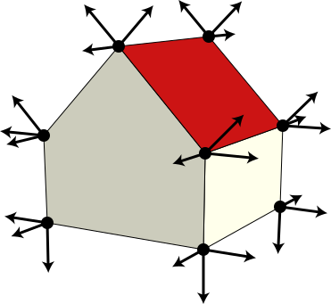

A Mesh with Lighting
But when the geometry is faceted, every vertex has a different normal for every face that touches it.
|

|
|
| $i$ | $p_x$ | $p_y$ | $p_z$ | $r$ | $g$ | $b$ | $n_x$ | $n_y$ | $n_z$ |
|---|
| 0 | 0.0 | 1.0 | 0.5 | 1.0 | 1.0 | 0.8 | 0.0 | 0.0 | 1.0 |
| 1 | −0.5 | 0.5 | 0.5 | 1.0 | 1.0 | 0.8 | 0.0 | 0.0 | 1.0 |
| 2 | −0.5 | 0.0 | 0.5 | 1.0 | 1.0 | 0.8 | 0.0 | 0.0 | 1.0 |
| 3 | 0.5 | 0.0 | 0.5 | 1.0 | 1.0 | 0.8 | 0.0 | 0.0 | 1.0 |
| 4 | 0.5 | 0.5 | 0.5 | 1.0 | 1.0 | 0.8 | 0.0 | 0.0 | 1.0 |
| 5 | 0.0 | 1.0 | 0.5 | 0.8 | 0.0 | 0.0 | −0.7 | 0.7 | 0.0 |
| 6 | 0.0 | 1.0 | −0.5 | 0.8 | 0.0 | 0.0 | −0.7 | 0.7 | 0.0 |
| 7 | −0.5 | 0.5 | −0.5 | 0.8 | 0.0 | 0.0 | −0.7 | 0.7 | 0.0 |
| 8 | −0.5 | 0.5 | 0.5 | 0.8 | 0.0 | 0.0 | −0.7 | 0.7 | 0.0 |
| 9 | −0.5 | 0.5 | 0.5 | 1.0 | 1.0 | 0.8 | −1.0 | 0.0 | 0.0 |
| 10 | −0.5 | 0.5 | −0.5 | 1.0 | 1.0 | 0.8 | −1.0 | 0.0 | 0.0 |
| 11 | −0.5 | 0.0 | −0.5 | 1.0 | 1.0 | 0.8 | −1.0 | 0.0 | 0.0 |
| 12 | −0.5 | 0.0 | 0.5 | 1.0 | 1.0 | 0.8 | −1.0 | 0.0 | 0.0 |
| 13 | −0.5 | 0.0 | 0.5 | 1.0 | 1.0 | 0.8 | 0.0 | −1.0 | 0.0 |
| 14 | −0.5 | 0.0 | −0.5 | 1.0 | 1.0 | 0.8 | 0.0 | −1.0 | 0.0 |
| 15 | 0.5 | 0.0 | −0.5 | 1.0 | 1.0 | 0.8 | 0.0 | −1.0 | 0.0 |
| 16 | 0.5 | 0.0 | 0.5 | 1.0 | 1.0 | 0.8 | 0.0 | −1.0 | 0.0 |
| 17 | 0.5 | 0.0 | 0.5 | 1.0 | 1.0 | 0.8 | 1.0 | 0.0 | 0.0 |
| 18 | 0.5 | 0.0 | −0.5 | 1.0 | 1.0 | 0.8 | 1.0 | 0.0 | 0.0 |
| 19 | 0.5 | 0.5 | −0.5 | 1.0 | 1.0 | 0.8 | 1.0 | 0.0 | 0.0 |
| 20 | 0.5 | 0.5 | 0.5 | 1.0 | 1.0 | 0.8 | 1.0 | 0.0 | 0.0 |
| 21 | 0.5 | 0.5 | 0.5 | 0.8 | 0.0 | 0.0 | 0.7 | 0.7 | 0.0 |
| 22 | 0.5 | 0.5 | −0.5 | 0.8 | 0.0 | 0.0 | 0.7 | 0.7 | 0.0 |
| 23 | 0.0 | 1.0 | −0.5 | 0.8 | 0.0 | 0.0 | 0.7 | 0.7 | 0.0 |
| 24 | 0.0 | 1.0 | 0.5 | 0.8 | 0.0 | 0.0 | 0.7 | 0.7 | 0.0 |
| 25 | 0.0 | 1.0 | −0.5 | 1.0 | 1.0 | 0.8 | 0.0 | 0.0 | −1.0 |
| 26 | −0.5 | 0.5 | −0.5 | 1.0 | 1.0 | 0.8 | 0.0 | 0.0 | −1.0 |
| 27 | −0.5 | 0.0 | −0.5 | 1.0 | 1.0 | 0.8 | 0.0 | 0.0 | −1.0 |
| 28 | 0.5 | 0.0 | −0.5 | 1.0 | 1.0 | 0.8 | 0.0 | 0.0 | −1.0 |
| 29 | 0.5 | 0.5 | −0.5 | 1.0 | 1.0 | 0.8 | 0.0 | 0.0 | −1.0 |
|
With 30 vertices, the triangle indices must again change, but still the total number of triangles in the table remains the same.